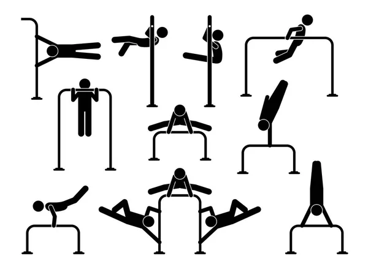
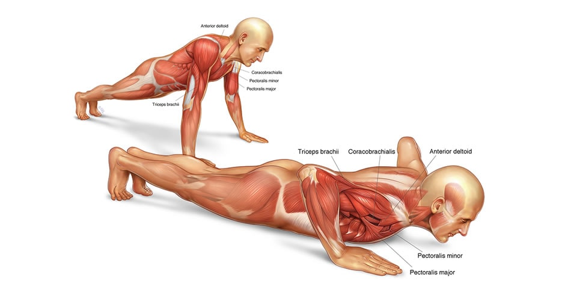

Calienta tus músculos. Agarra el peso con las manos. Párate con los pies separados al ancho de los hombros. Baja lentamente doblando las rodillas y las caderas. Mantén la espalda recta y el peso en los talones. Sube empujando a través de los talones. Respira adecuadamente durante el movimiento. Realiza el número deseado de repeticiones. Descansa entre series. Presta atención a la forma y evita lesiones. Termina con estiramientos para enfriar los músculos.
Colócate en el suelo con las manos debajo de los hombros y los dedos apuntando hacia adelante. Extiende las piernas hacia atrás, manteniendo el cuerpo en línea recta desde los hombros hasta los talones. Aprieta los músculos abdominales y glúteos para mantener una posición estable. Flexiona los codos y baja el cuerpo hasta que el pecho esté cerca del suelo. Presiona hacia arriba para volver a la posición inicial, extendiendo completamente los brazos. Inhala mientras bajas y exhala mientras subes. Realiza el número deseado de repeticiones, manteniendo una buena forma. Tómate un breve descanso entre series.
Comienza de pie con los pies separados al ancho de los hombros y los brazos a los costados del cuerpo. Agáchate flexionando las rodillas y baja las manos al suelo justo delante de tus pies, manteniendo los brazos extendidos. Desde la posición agachada, lleva ambos pies hacia atrás al mismo tiempo para adoptar una posición de plancha, manteniendo una línea recta desde los hombros hasta los tobillos. Si deseas agregar intensidad, realiza una flexión de brazos aquí. Baja el pecho hacia el suelo doblando los codos mientras mantienes el cuerpo en línea recta. Luego, empuja hacia arriba para volver a la posición de plancha. Desde la posición de plancha, lleva ambos pies hacia adelante hacia las manos en un solo movimiento, volviendo a la posición de cuclillas. Desde la posición de cuclillas, impúlsate hacia arriba explosivamente, extendiendo completamente el cuerpo y saltando lo más alto que puedas.
Acuéstate boca arriba en una colchoneta con las piernas extendidas y los brazos a los lados o cruzados sobre el pecho. Coloca las manos detrás de la cabeza o a los lados del cuerpo. Flexiona las rodillas y las caderas, con las plantas de los pies en el suelo y separados al ancho de las caderas. Contrae los abdominales y levanta la parte superior del cuerpo del suelo, elevando los hombros y la espalda hacia las rodillas mientras exhalas. Mantén la posición alta por un segundo o dos, concentrándote en los abdominales. Inhala mientras desciendes lentamente hacia la posición inicial, manteniendo el control del movimiento. Completa el número deseado de repeticiones manteniendo una técnica adecuada y sintiendo la activación de los abdominales en cada repetición. Descansa brevemente entre las series si es necesario y luego repite el ejercicio según tu nivel de condición física y objetivos de entrenamiento.
Posición inicial: Párate con los pies separados al ancho de las caderas y los brazos a los lados del cuerpo o en las caderas para estabilidad. Activación muscular: Contrae los abdominales y mantén una postura erguida con la espalda recta para evitar lesiones. Elección del ejercicio: Decide qué ejercicio de piernas deseas realizar, como sentadillas, estocadas o elevaciones de talones, dependiendo de tus objetivos y nivel de condición física. Técnica adecuada: Para sentadillas, asegúrate de flexionar las rodillas y las caderas mientras mantienes los talones en el suelo y la espalda recta. Para estocadas, da un paso adelante y baja el cuerpo doblando ambas rodillas. Para elevaciones de talones, eleva los talones del suelo manteniendo el resto del pie en contacto con el suelo. Control del movimiento: Realiza cada ejercicio con un movimiento controlado, prestando atención a la técnica y evitando movimientos bruscos que puedan causar lesiones. Repetición: Completa el número deseado de repeticiones para cada ejercicio, manteniendo una buena técnica y sintiendo la activación de los músculos de las piernas.
Preparación y postura: Siéntate en una silla resistente con la espalda recta y los pies apoyados en el suelo para mantener una postura erguida y prevenir lesiones en la espalda. Selección y agarre de pesas: Elige pesas adecuadas para tu nivel de fuerza y condición física, y agarra las pesas con un agarre firme pero cómodo, manteniendo las muñecas alineadas con los antebrazos. Posición inicial: Deja que los brazos cuelguen a los lados del cuerpo con las palmas hacia adentro y los codos ligeramente flexionados. Movimiento controlado y concentración: Realiza el ejercicio con un movimiento lento y controlado, enfocándote en el músculo que estás trabajando para maximizar la activación muscular y prevenir lesiones. Respiración adecuada: Exhala durante la fase de esfuerzo del ejercicio y luego inhala mientras regresas a la posición inicial para mantener una respiración controlada y efectiva. Número de repeticiones y series: Completa el número deseado de repeticiones y series para cada ejercicio, adaptándolo a tu nivel de condición física y objetivos de entrenamiento. Descanso y recuperación: Descansa brevemente entre las series y los ejercicios para permitir que los músculos se recuperen y evitar la fatiga excesiva, lo cual es crucial para evitar lesiones y optimizar el rendimiento.
La calistenia no requiere equipo costoso ni membresías de gimnasio, lo que la hace accesible para todos. Además, al ser versátil, se adapta fácilmente a diferentes niveles de condición física y objetivos personales de entrenamiento.
Las flexiones son un ejercicio de calistenia efectivo para fortalecer el pecho, los hombros, los tríceps y el core. Se pueden realizar en cualquier lugar sin necesidad de equipamiento especializado, y se pueden adaptar para diferentes niveles de condición física y objetivos de entrenamiento.
